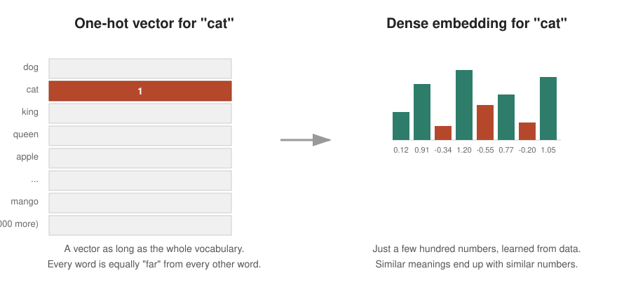
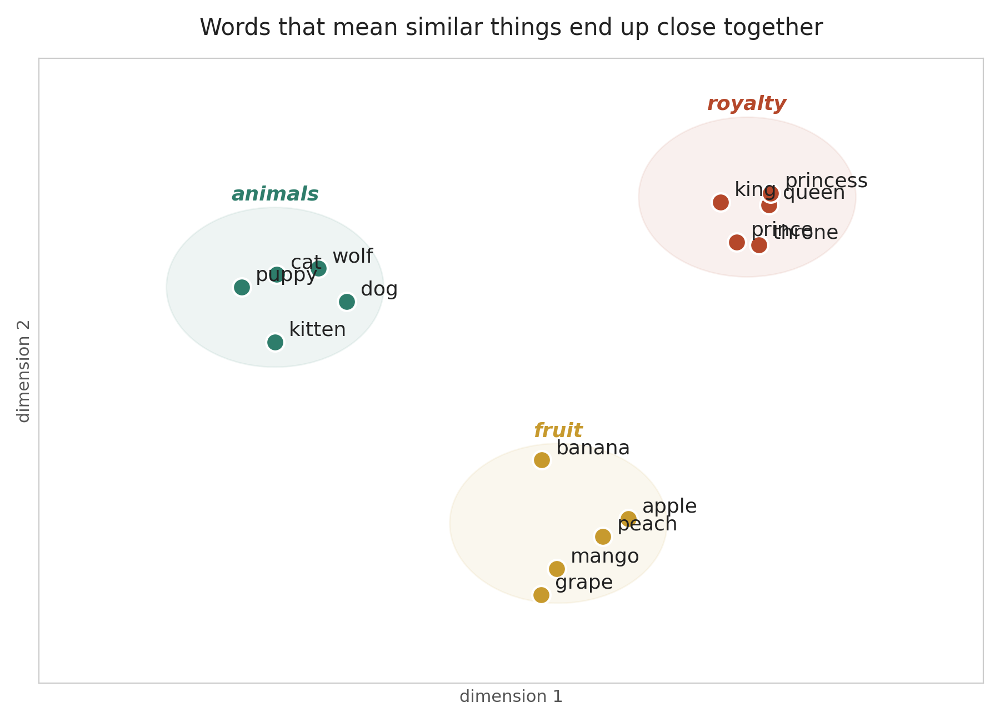
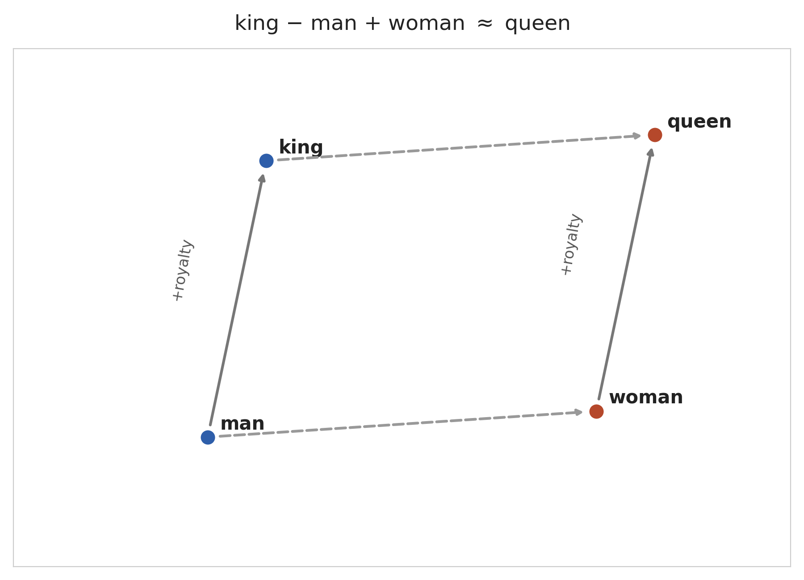
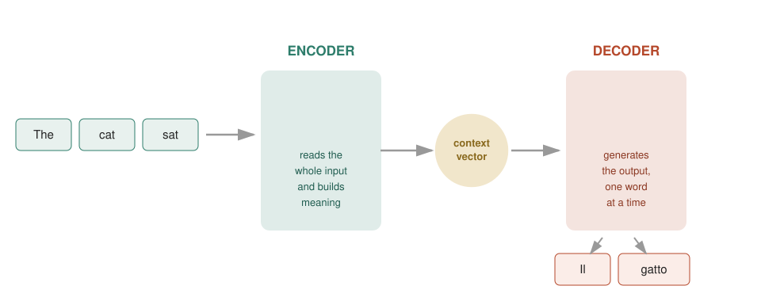
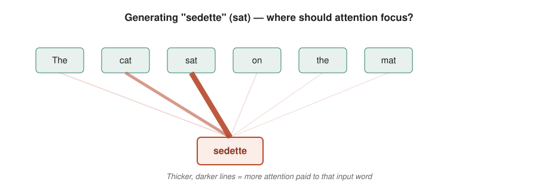
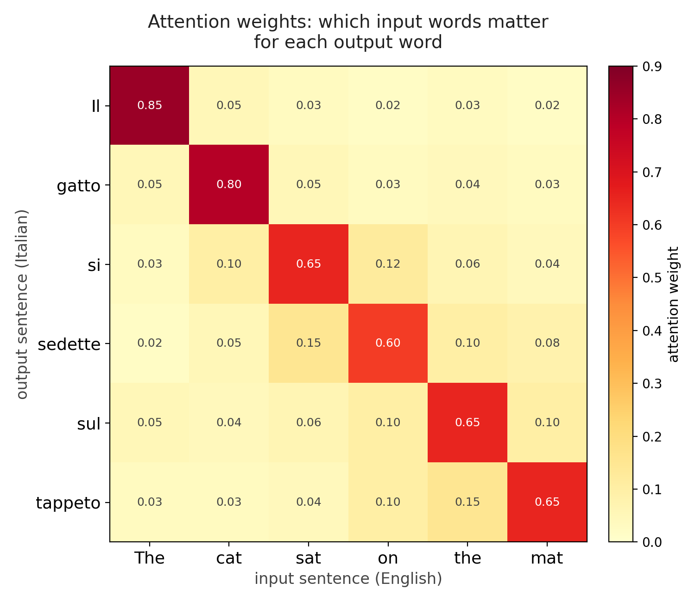

A relatively recent idea:
\(v(\textbf{King}) = [0, 0, 0.11, 0, 0.67, 0 \dots ]\)
\(v(\textbf{King}) - v(\textbf{Male}) + v(\textbf{Female}) \approx v(\textbf{Queen})\)
Each word in the dictionary is a dimension.
1, all the rest are 0Enormous spatial representation, even after stemming (swim/swam/swimming/swimmer → \(v(\textbf{Swim})\))
Uniform word distances: \(d(v(\textbf{Cat}), v(\textbf{Kitten})) = d(v(\textbf{Cat}), v(\textbf{Tiger}))\)?

Map all words in a low-dimensional space (b. 100 to 1000) to be learned via training
distance becomes meaningful: closeness = similarity of meaning

Words about the same topic naturally cluster together — nobody told the model that “king” and “queen” are related. It figured that out from how these words are used in text.
Because meaning is encoded as direction and distance, you can literally do arithmetic with words:
\[\text{king} - \text{man} + \text{woman} \approx \text{queen}\]

You never hand-design them. A model (famous examples: Word2Vec, GloVe, and later contextual methods) learns embeddings by playing a simple game millions of times over huge amounts of text:
“Given the words around a blank, guess the missing word.”
To get good at this game, the model is forced to notice that “cat” and “dog” fit in similar blanks — and gradually pushes their vectors closer together.
Once each word is a vector, a new question appears:
How does a model read a whole sentence and produce a whole different sentence — like translating English to Italian, or summarizing a paragraph?
The answer that dominated the field for several years: the encoder–decoder architecture.
Reads the entire input, one word at a time, and compresses everything it has read into a single summary.
Starts from that summary and generates the output, one word at a time, each new word informed by the ones it already produced.

Everything the encoder learns about the input sentence gets squeezed into one fixed-size vector — often called the context vector or “thought vector.”
This is elegant… but it is also the architecture’s biggest weakness.
Imagine reading a 40-word sentence, then closing the book and having to translate it from memory of one single mental snapshot.
This is exactly what researchers observed: encoder–decoder translation quality dropped sharply as sentences got longer.
Instead of relying only on the final context vector, attention lets the decoder look back at every word of the input, every time it generates a new output word — and decide which ones matter right now.
Analogy: instead of translating from a single memorized summary, you keep the original sentence in front of you and glance back at the relevant part each time you write the next word.
For every word the decoder is about to produce, attention:

When producing the Italian word for “sat,” the model pays most attention to “sat” in the input — with a little attention on “cat” for grammatical agreement, and almost none on the rest.
Attention weights can be visualized as a grid: one row per output word, one column per input word, brightness = how much attention was paid.

Notice the pattern roughly follows the diagonal — each output word mostly attends to the corresponding input word — but not always: word order can differ between languages.
Attention turned out to be so useful that researchers eventually asked: “What if attention is all we need — no encoder/decoder recurrence required?” That question led to the Transformer architecture, which powers most modern language models — a story for another day.
| Idea | Question it answers | Key limitation it solves |
|---|---|---|
| Word vectorization | How do we represent a word as numbers? | Raw text isn’t numeric; one-hot vectors ignore similarity |
| Encoder / decoder | How do we turn a sentence into another sentence? | Individual word vectors alone don’t capture sequence meaning |
| Attention | Which parts of the input matter for each part of the output? | Fixed-size summaries lose information on long inputs |
Together, these three ideas are the conceptual backbone behind machine translation, chatbots, and most of what people currently call “AI language models.”
Thank you!
Next steps, if you’re curious: look up Word2Vec, the original encoder–decoder translation paper (Sutskever et al., 2014), and “Attention Is All You Need” (Vaswani et al., 2017) — the paper that introduced the Transformer.